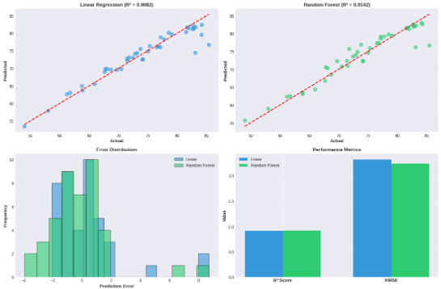

This website presents an exploratory data analysis of global health indicators and their relationship to economic conditions across countries.
We combine COVID-19 health data from the Google COVID-19 Open Data project with GDP per capita from the World Bank API, and build a cleaned dataset that can be reused for future work. We’ll walk you through the entire process if you would like to reproduce the same project at your own time!
1. Data Sources & Retrieval
We use two main sources:
Health Data
Provider: Google / Harvard Global Health Institute (COVID-19 Open Data)
See the Data & Methods page for the exact Python code used to:
Download health.csv directly from the URL
Query the World Bank API for GDP per capita
Merge both into a single tidy DataFrame (df_clean)
2. Key Questions
We focus on questions such as:
How do health outcomes vary across income levels?
Is there a visible relationship between GDP per capita and COVID-19 burden (e.g., cases or deaths per 100k)?
Which regions appear as outliers in terms of health vs. income?
These are explored in more depth on the Analysis & Visuals page.
3. Interactive Exploration
Below is an example interactive widget that lets you explore a subset of our final dataset. In the full project, this will be replaced by a plot using the real df_clean DataFrame.
Code
import plotly.express as pximport pandas as pddemo = pd.DataFrame({"country": ["A", "B", "C", "D"],"gdp_per_capita_usd": [1000, 5000, 15000, 25000],"cases_per_100k": [200, 800, 1200, 400]})fig = px.scatter( demo, x="gdp_per_capita_usd", y="cases_per_100k", hover_name="country", title="Demo: GDP per Capita vs Cases per 100k")fig
4. Key Visualizations
Here are some of the main figures from our analysis.
Model Performance

Global Distribution of Mortality
Distribution and Country Count
Correlation Matrix of Indicators
Health Spending vs Life Expectancy
Source Code
---title: "Global Health & Economic Vulnerability"format: html: toc: false---# Global Health AnalysisThis website presents an exploratory data analysis of global health indicatorsand their relationship to economic conditions across countries.We combine **COVID-19 health data** from the [Google COVID-19 Open Data project](https://github.com/GoogleCloudPlatform/covid-19-open-data) with **GDP per capita**from the [World Bank API](https://api.worldbank.org/), and build a cleaned datasetthat can be reused for future work. We'll walk you through the entire process ifyou would like to reproduce the same project at your own time!---## 1. Data Sources & RetrievalWe use two main sources:::: {.columns}::: {.column width="50%"}### Health Data- Provider: **Google / Harvard Global Health Institute (COVID-19 Open Data)**- Format: CSV (`health.csv`)- Access: Public Google Cloud Storage bucket - URL: `https://storage.googleapis.com/covid19-open-data/v3/health.csv`:::::: {.column width="50%"}### Economic Data- Provider: **World Bank**- Indicators: - `NY.GDP.PCAP.CD` — GDP per capita (current US$)- Format: JSON from World Bank REST API- Access: Public API endpoint::::::See the **Data & Methods** page for the exact Python code used to:- Download `health.csv` directly from the URL- Query the World Bank API for GDP per capita- Merge both into a single tidy DataFrame (`df_clean`)---## 2. Key QuestionsWe focus on questions such as:- How do **health outcomes** vary across income levels?- Is there a visible relationship between **GDP per capita** and **COVID-19 burden** (e.g., cases or deaths per 100k)?- Which regions appear as **outliers** in terms of health vs. income?These are explored in more depth on the **Analysis & Visuals** page.---## 3. Interactive ExplorationBelow is an example interactive widget that lets you explore a subset ofour final dataset. In the full project, this will be replaced by a plotusing the real `df_clean` DataFrame.```{python}import plotly.express as pximport pandas as pddemo = pd.DataFrame({"country": ["A", "B", "C", "D"],"gdp_per_capita_usd": [1000, 5000, 15000, 25000],"cases_per_100k": [200, 800, 1200, 400]})fig = px.scatter( demo, x="gdp_per_capita_usd", y="cases_per_100k", hover_name="country", title="Demo: GDP per Capita vs Cases per 100k")fig```## 4. Key VisualizationsHere are some of the main figures from our analysis.### Model Performance{fig-alt="Model performance of life expectancy models" width="70%"}### Global Distribution of Mortality{fig-alt="Global distribution of mortality rates" width="70%"}### Distribution and Country Count{fig-alt="Distribution of life expectancy and country counts" width="70%"}### Correlation Matrix of Indicators{fig-alt="Correlation matrix of health indicators" width="70%"}### Health Spending vs Life Expectancy{fig-alt="Health spending vs life expectancy plot" width="70%"}